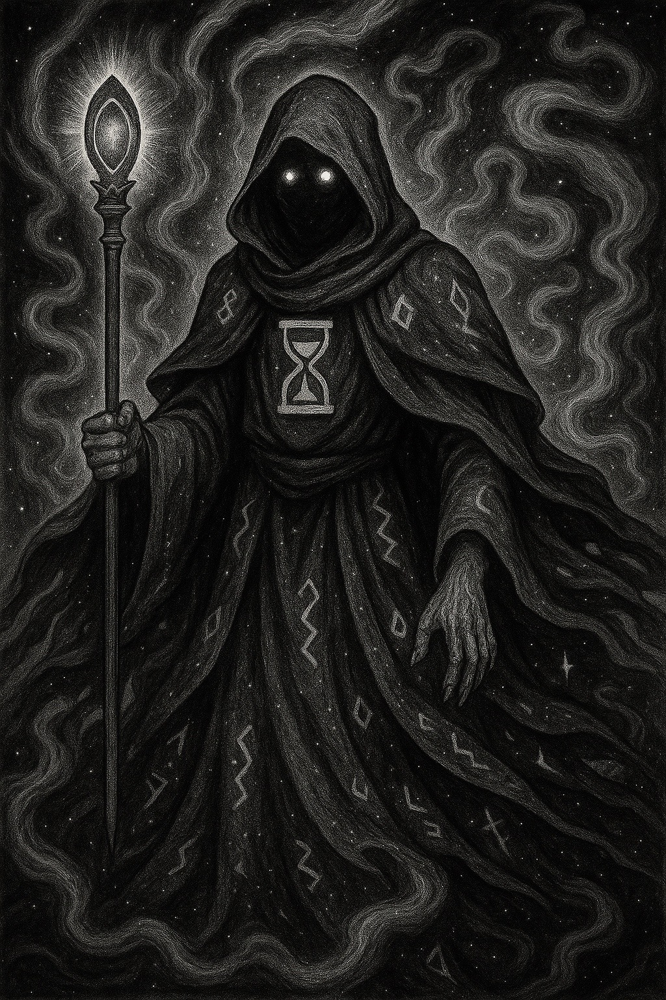

Vigilus

Alias: The Chrono Sentinel
Age / Race / Role: Timeless / Guardian Entity / Warden of Time, Watcher of All Realities
Appearance: A tall figure wrapped in flowing silver robes inscribed with timelines. His eyes are crystalline clocks, and he carries a staff that warps chronology.
Affinities: Time, Multiversal Watch, Chrono-Energy
Threat Tier: Divine-Class
Celestial Attributes
• Power: 9
• Speed: 8
• Technique: 10
• Intelligence: 10
• Defense: 9
• Aura Control: 10
Signature Abilities
• Chrono Reversal
• Temporal Lock
• Infinite Echo
• Timewalker's Oath
• Celestial Pause
Personality
Detached yet loyal. Exists to observe and intervene only at cosmic thresholds. Believes the flow of time is sacred.
Divine Domain: Paradox Realm